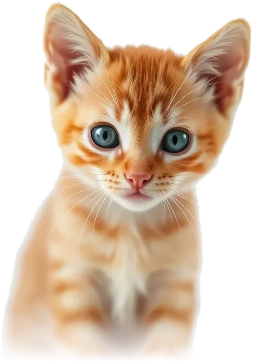

Круглосуточно · м. Фонвизиниская
«Высота»: лечим хвостатых круглосуточно
Круглосуточная ветеринарная клиника в Москве: диагностика, лечение, операции и стационар для домашних животных.

Работа круглосуточно
Клиника работает круглосуточно, врачи готовы оказать помощь в любое время.
Современная диагностика
Современное диагностическое и лабораторное оборудование для точного диагноза.
Сложные операции
Сложнейшие операции проводят под контролем анестезиологов.
Вызов врача на дом
Врач приедет на дом, если питомцу трудно добраться до клиники.
Аптека на базе клиники
Рекомендованные врачом лекарства можно купить сразу, не уходя из клиники.
Стационар для животных
Врачи позаботятся о питомце под наблюдением во время лечения и после процедур.
Направления
Первичный приемАкушерство и гинекологияВакцинацияГастроскопияГрумингДерматологияКардиологияКолоноскопия у собак и кошекЛабораторияЛечение животныхОнкологияОперацииСтационарСтерилизация и кастрацияСтоматологияТравматологияУЗИЧипирование
Первичный прием
2000 ₽
Вакцинация
2000 ₽
Кастрация здорового кота (комплекс)
5500 ₽
Как нас найти
- АдресМосква, улица Фонвизина, 11А
- МетроФонвизиниская, Тимирязевская, Отрадное
- Телефоны+7 (495) 320-32-01
+7 (495) 960-93-70 - Почта1@vetzvonok.ru
- Режим работыФонвизина 9:00–21:00; Юрловский проезд круглосуточно
Филиал на ул. Фонвизина, 11А: 09:00–21:00
Запишитесь — мы на связи круглосуточно
Москва, улица Фонвизина, 11А · м. «Фонвизиниская»